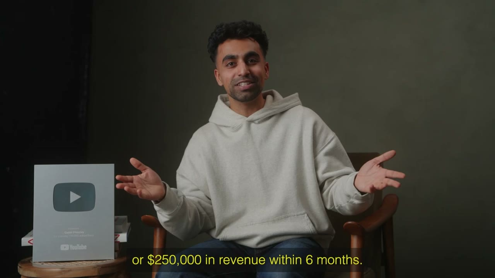
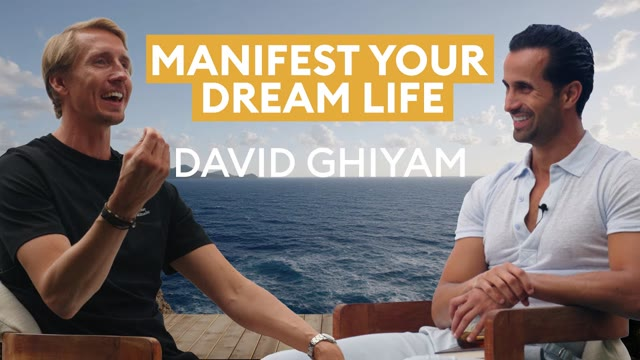
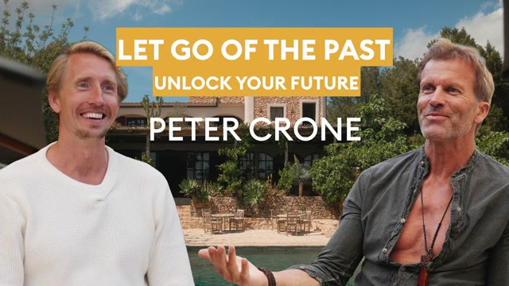
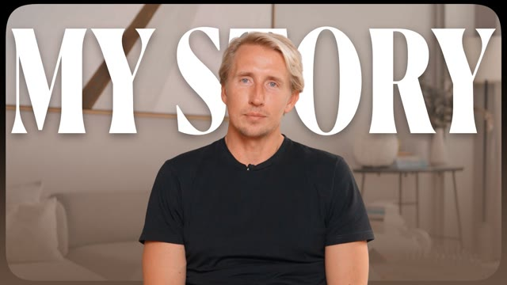
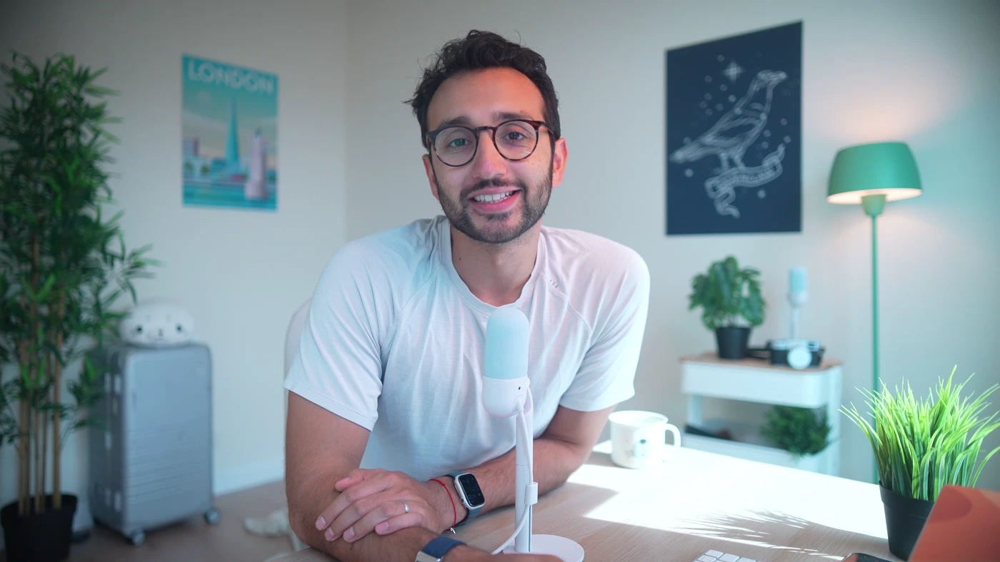
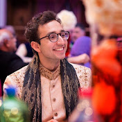
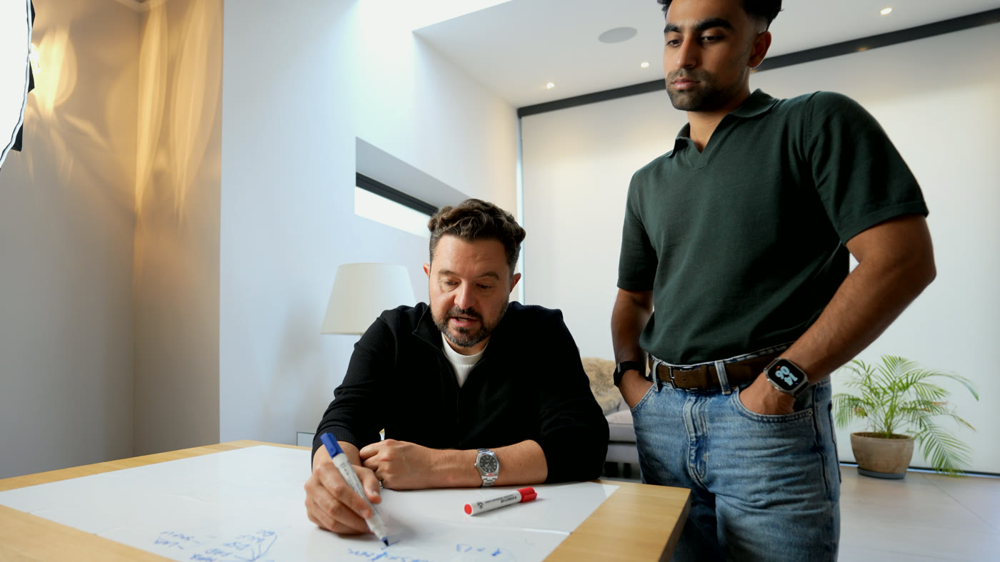
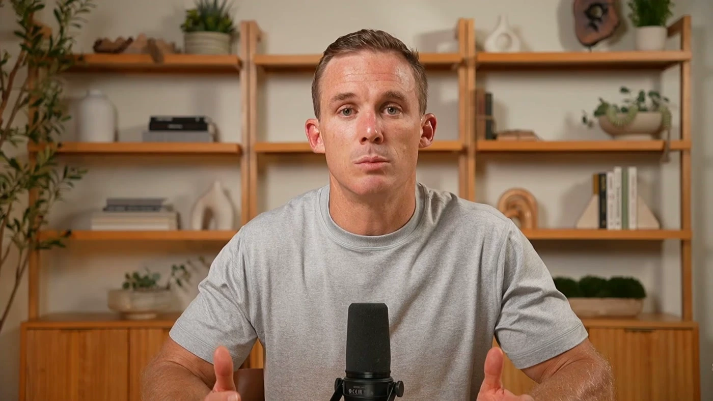
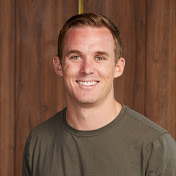
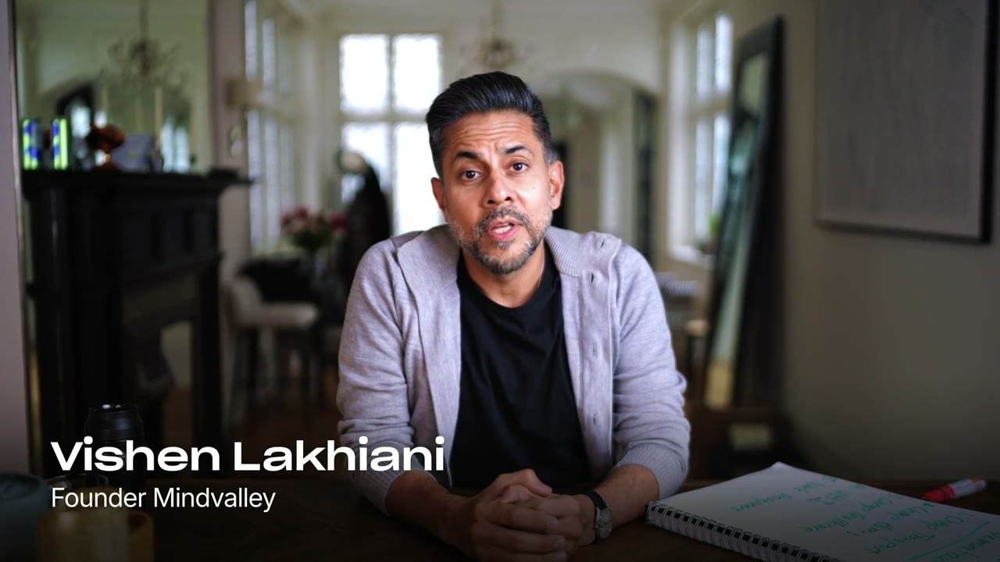

A done-for-you channel built on your biggest ideas
Educational thought leadership. You teach. We do everything else.

This is the standard service I offer to founders who want to grow their YouTube channels.
We can study your podcast to identify your best video ideas.
For example.

1:07:52
50:35
16:24We start where you're already the expert: Intelligent Change. Then beyond.
Concept titles and thumbnails.
How it works.
Strategy Deep Dive
Weeks 1 to 2: we study what already works in your space and build your channel identity.
Brain Dump Looms
Teach each idea to camera for 5 to 10 minutes. We take it from there.
Scripts
Talking points with word-for-word hooks. Ready in 5 working days.
Clickable Packaging
Titles and thumbnails by a dedicated designer.
Filming Days
At least 4 videos in one day, booked 2 weeks ahead, with direction on the day.
Editing
A top 1% team. Edits in 5 working days, checked by our Creative Lead first.
Monthly Review
One north star metric, agreed at kickoff and reported every month.
Your Team
A fractional YouTube team, run day to day on Slack, Frame.io and Notion.
I've done this for the biggest names in personal growth.

1:59

1:23

2:13

0:22FAQ: how we work together
Hey there 👋
Welcome!
This document explains how we work together over the next 6 months, and hopefully beyond. It contains what to expect from us, what we need from you, and how we build a YouTube channel into something truly incredible.
Please read it end-to-end once, it'll save us both a lot of back-and-forth later on.
🔭 The big picture
You're buying a YouTube team, not individual videos. Your investment funds a dedicated YouTube Strategist, a Creative Lead, a Video Editing Team, a Thumbnail Designer and a system — that ships 4 longform videos a month at top quality. Our job is to publish good work on a rhythm and optimise the hit rate over time.
Not every video will hit. Roughly 1 in 10 videos really takes off on YouTube, and that one pays for the other nine. Especially true in the first couple of months while we're calibrating your channel — hooks, retention curves, audience response. If you're expecting every video to be a home run, this isn't the right engagement. If you're expecting compounding channel growth over 6–12 months, it is.
👉 According to TubeBuddy — the average YouTube channel requires 152 videos to hit 10,000 subscribers. That's almost 3 years of content.
Growth is measured on a metric we agree at kickoff — subs, newsletter sign-ups, leads, watch time, whatever actually matters for your business. We agree it once, together, and report against it monthly.
This metric guides our strategy — it isn't a guarantee. No serious agency can promise revenue, subs, or any specific outcome on YouTube. Anyone who tells you they can is lying. What we can promise is the team, the system, and the rigour to give you the best possible shot — and a clear north star to point every decision at.
📦 What's included
- 4 longform YouTube videos per month — scripting, filming support, editing, thumbnails, titles, upload, and optimisation.
- A dedicated YouTube Strategist who owns your channel and provides updates in Slack every week.
- A Creative Lead who owns our quality bar — running internal reviews before anything reaches you, and shaping your channel's visual identity (style, branding, motion graphics direction).
- A top 1% Video Editing Team that works under your strategist's direction.
- A thumbnail designer who builds the best packaging concepts and designs.
- A monthly performance review — what's working, what's not, what to double down on.
- A bonus video on 5-week months. Some months have 5 Saturdays — that's a 5th video. We absorb it. No surcharge, no nickel-and-diming.
🚫 What's not included
- Shorts, podcast cutdowns, or reformatting your long-form content for other platforms. If you want cutdowns for your own use, we can provide the A-rolls for you to run that separately.
- Non-YouTube channels — Instagram, TikTok, X, newsletter. This isn't our zone of genius.
- Additional videos beyond the 4/month baseline. That's a separate scoped engagement.
- A/B testing videos that haven't taken off. If it has a pulse, we'll always test it. If a video's dead, it's dead — we put that energy into the next one.
- Minor optimisations. There are some things on YouTube like channel keywords which fall below the 0.1% impact bar in 2026. While it's important to have something there, our time is always best spent on producing better videos, better hooks, better retention.
👥 Who you'll work with
- Your YouTube Strategist is your main day-to-day contact. They own your channel direction. They build the content strategy, write your scripts, and run the monthly performance review. They handle scheduling, deliverables, feedback, and all the "where are we with X?" questions.
- A Creative Lead sets and enforces our quality bar. They run internal reviews before anything reaches you, and shape your channel's visual identity — style, branding, motion graphics. They work alongside your YouTube Strategist; you won't deal with them directly, but their hand is on the standard of every output.
- A video editing team and thumbnail designer work under your strategist's direction. You don't brief them directly — feedback goes through your YouTube Strategist so you only deal with one person.
- Saf (founder) oversees strategy across the agency but isn't your day-to-day contact. Saf may be on early onboarding calls or the occasional filming day, but your relationship is with your YouTube Strategist.
If something goes wrong → contact your YouTube Strategist first, then Saf — in that order. Going straight to Saf doesn't speed anything up.
We work on 9am–5pm GMT timezone → We're a global team, but we align to the UK time zone. If you send a message outside those hours, you can expect a response the following working day.
🗓️ The first two months
Weeks 1–2 — strategy and identity. No filming yet.
- We build your Strategy Deep Dive from scratch and present it back to you.
- Together we agree on your first videos to go on the channel.
- We schedule your first filming day.
- In parallel, we design your channel identity — motion graphics, thumbnail identity, reusable visual assets, and channel banner.
- You won't see a finished video in the first two weeks. That's by design. We need that time to build the foundation that everything else sits on.
Week 3 — first filming day. The soonest we can start production.
Week 4 — first edited videos delivered. Typically 2 videos, not 4. The 4-per-month rhythm kicks in from month 2.
Weeks 5–8 — Channel Launch and Weekly Rhythm. After the channel is launched, you'll be in a rhythm of monthly ideation, scripting, and filming, with weekly editing and uploading. We'll also move you from giving us feedback before a video goes live, to giving us feedback after a video has gone live (see The Feedback Model below).
⚙️ How we work
Ideas
- We will pull together new ideas for your channel once you've run out of ideas, or we identify a trending format that's working well right now.
- The ideas that we put together will be pre-validated and vetted by our YouTube Strategist, which will give you the best chance of success.
- Any ideas you come up with will be clearly labelled as such, so that we can learn from any performance differences.
🧠 Brain Dump Looms
This is our favourite part of the process — it's where the gold lies.
Before we write your talking-point scripts, we need a Brain Dump Loom for each video — a Loom where you teach the idea to camera as if you were explaining it to a friend over coffee. Camera on, relaxed, unscripted. Nothing here goes on YouTube — it's the raw material we shape into a script that sounds like you and works for the algorithm (we'll reorder points, sharpen the hook, add re-engagement beats).
How it works:
- One Loom per video idea. Filming days batch at least 4 videos, so we'll need 4 Brain Dumps ahead of each one.
- Due 5 working days before filming day — so we have time to script and you have time to review.
- 5–10 minutes is the sweet spot. Under 5 isn't enough; longer is fine if there's genuine depth.
- Drop the link in Slack. We'll embed it at the top of the Notion card as the reference for your script.
What to cover:
Imagine a friend invites you to coffee. White tablecloth, two hot cups, she leans in and asks for advice — and the advice she's asking for is the title of the video we're about to make. How would you explain it to her? Be real. Forget the polish. Speak from the heart.
- Your angle. What are you saying that nobody else is? What's your thesis? Where's the quality cut above what's already on YouTube?
- Talking points. The main beats. We'll reorder them and add re-engagement moments — your job is to get the substance out.
- Props. Stories, data, books, frameworks, numbers, quotes, anecdotes, screenshots — anything that helps you teach.
A tip: five minutes of structured thought on a notepad before you record beats twenty minutes of rambling.
Why camera, not written. Tone, cadence, which words you lean into — those nuances are what we rebuild into the script, and writing strips them out.
If you skip the Brain Dump, you're skipping pre-production and winging filming day. We don't recommend it — the first 30 seconds of a YouTube video decide everything. Once your talking-point scripts are in hand, you're free to deviate on camera if you feel strongly — we can make calls in post. But the Brain Dump is what lets us hand you a fantastic script to deviate from.
Scripts
- Scripts are delivered in 5 working days from a complete brief.
- You have 48 hours to review. Silence = approved.
- 2 rounds of feedback included.
- The standard is a talking-point script — we never do word-for-word unless it's agreed as an exception (for example, a highly researched video explainer format).
Filming
- Booked 2 weeks in advance and blocked out in the calendar.
- You arrive camera-ready — on time, on script, hair, wardrobe, and fully briefed on the video scripts written inside your Notion page. You shouldn't be surprised, or reading it for the first time, when you sit in the chair.
- Production is our job. Showing up ready is yours.
- If filming gets cancelled or moved at short notice and we run out of runway, those videos just don't happen that cycle. We can't produce videos when we don't have footage.
- Footage must be provided by Friday 5pm GMT to be included in the production cycle for the following week.
- You must be capable of self-filming. If you rely on someone else being there to be able to film, it creates a key dependency that can make monthly filming very difficult.
- At the beginning, having Saf or your YouTube Strategist available can be helpful for direction — but once you've learned how this works and got into a rhythm, you should be able to do filming by yourself.
Footage (if you're filming yourself and sending it in)
- Uploaded to our shared Drive by the agreed cutoff. Miss the cutoff, miss the delivery — our editors work on a schedule.
Editing and feedback
- Edited videos are delivered in 5 working days, for runtimes of 25 minutes or less.
- Longer runtimes take longer: +1 working day per 10 minutes over 25 minutes.
- e.g. a 35-minute video = 6 days, or a 55-minute video = 8 days.
- 48-hour feedback window on each edit. Silence = approved and scheduled.
- Consolidated feedback only. One message with all your notes = one round. We can't work with a stream of messages over the weekend.
- Timestamped feedback on raw footage. If you want something flagged in the raw footage, give us the timestamp — we can't sit through hours of footage to interpret vague notes or feelings, so please be as specific as possible to respect our team's time.
- 2 rounds of revisions per edit. No additional rounds to avoid over-engineering or perfectionism creep.
- "I've changed my mind about the concept" = new video on the next cycle, not a re-edit.
- Once a video is live, it stays live. We can change the title, we can change the thumbnail, we can even remove segments. We can't change the video itself. We can't add sections in.
- Rule of thumb: we don't re-upload published videos because it hurts the YouTube algorithm. Duplicate content gets flagged as bot behaviour, it's not worth it.
Uploads
- We control the upload schedule and aim for weekly videos released over the weekend.
- From time to time, we may need to upload on a Monday to accommodate any last-minute feedback requests or important changes.
- This doesn't hurt the long-term growth potential of your video; it will find the right audience. A video released on a weekday will be considered the same as one released on a weekend.
- Titles, thumbnails, and descriptions best practices are led by our experience, and informed by your input.
- If we have too many chefs in the kitchen, this doesn't work.
- If you want to challenge a thumbnail or title or creative decision, that's fine. We are led by the data. We are committed to winning.
AI Tools
- We use AI for B-roll generation and thumbnail elements as standard. These tools are what keep us on the cutting edge and ship faster. AI is extremely sophisticated and realistic, and anyone who isn't using them is going to be left behind.
- If you have a principled objection to AI in your content, we're not the right fit.
💬 Communication and Tools
- Slack.
- This is where we'll share updates on everything related to your YouTube channel, including thumbnail designs.
- Please do not use WhatsApp, or personal channels.
- One Slack = one source of truth and shared history with links / media.
- Your YouTube Strategist is your first and fastest route to a reply.
- We aim to reply the same working day during UK business hours (Mon–Fri, 9–5). You're welcome to message us, and we may even message you outside of these hours — but that should always be considered a gesture, not the norm of how we operate day to day. Our team need to sleep and spend time with their families — just like you.
- Not every reply is a full answer. For bigger or more loaded questions, the first reply may be "we've seen this, need to gather our thoughts and come back to you in X days." For complex topics, we may move the conversation to a scheduled call rather than keep it in Slack.
- No out-of-hours messaging. Nothing in YouTube is a true emergency. If something genuinely is: email with "URGENT" in the subject.
- Frame.io
- This is where we'll share our video edits with you, and how we collaborate with our team on feedback.
- Notion
- This is where your YouTube content hub lives. It contains your video ideas and scripts. It's where your YouTube Strategist will be fleshing out future videos.
🔄 The feedback model
How feedback flows will shift once we've hit our stride — usually after week 4 (channel launch).
Phase 1: Pre-upload review. While we're calibrating to your voice and standards, you review each video before it goes live. 48-hour window. Feedback routed through your YouTube Strategist.
Phase 2: Ship-then-feedback. Once alignment is clear, videos go out on the agreed cadence without a pre-upload loop. You watch when you watch, give feedback when it comes up, and we fold it into future videos. This is how the best relationships work — the clients who grow the fastest are the ones who trust the team to ship, and use feedback to shape what comes next.
What we need you comfortable with: our execution will be slightly different from the way you would have done it. Not worse — a different flavour. If that distance feels intolerable, this engagement won't work for you, and it's better we name that now than find out in month three.
🤝 What we need from you
- A 6-month commitment, paid up front. Channel building takes time — anything shorter doesn't give the strategy room to land. Paying in full at kickoff lets us invest from day one, with no back-and-forth on billing. We revert to monthly billing after the 6-month term is over.
- Give us as much feedback as you can at the beginning. The more we can learn from you while energy is high, the faster we can ramp up and you can trust us completely.
- Show up to filming prepared.
- Hit the 48-hour feedback review windows during the initial phase.
- One named decision-maker. Let us know if that changes.
- Keep your YouTube Strategist informed on anything that affects scheduling — travel, illness, launches, team changes.
- Trust the process for the first 90 days. If something isn't working, raise it with us, but you must recognise that at the end of the cycle, we can reflect on what worked and didn't work.
- Come in expecting some videos to miss. Our job is hit-rate optimisation, not 100% wins.
🛡️ What you can count on from us
- Delivery on cadence, or advance notice if something will slip and why.
- Solid strategic direction, even when it's not what you want to hear.
- Channel growth on the metric we agreed at kickoff.
- No surprises on cost. Everything in this document is accounted for. We're all in and leaving no stone unturned in seeing you win.
- A dedicated YouTube Strategist who owns every thread so nothing gets dropped.
- Responsibility for the outcome. Once you sign off on a video, it's on us to deliver on the strategy and fold learnings back into what comes next.
📝 A final note
This engagement works best when both sides are on the same page from day one.
If anything in this document feels unclear, different from what you expected, or unrealistic to commit to, please flag it now — not in month 3 🙂
Thanks for trusting us with the channel, and welcome to Talking Heads.